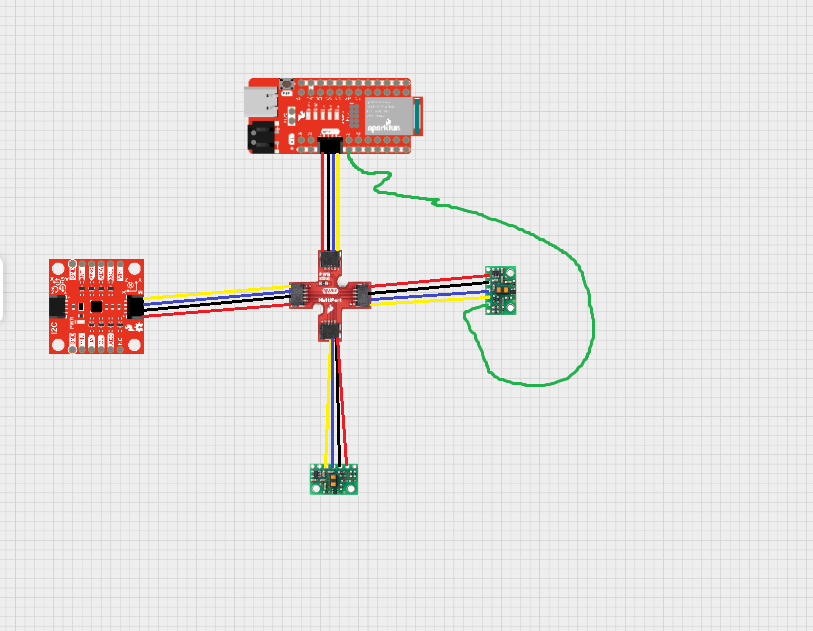
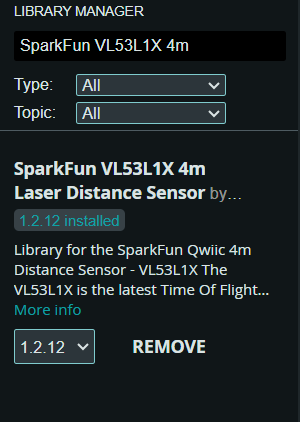
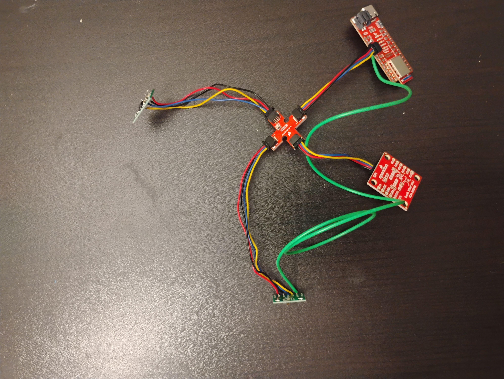
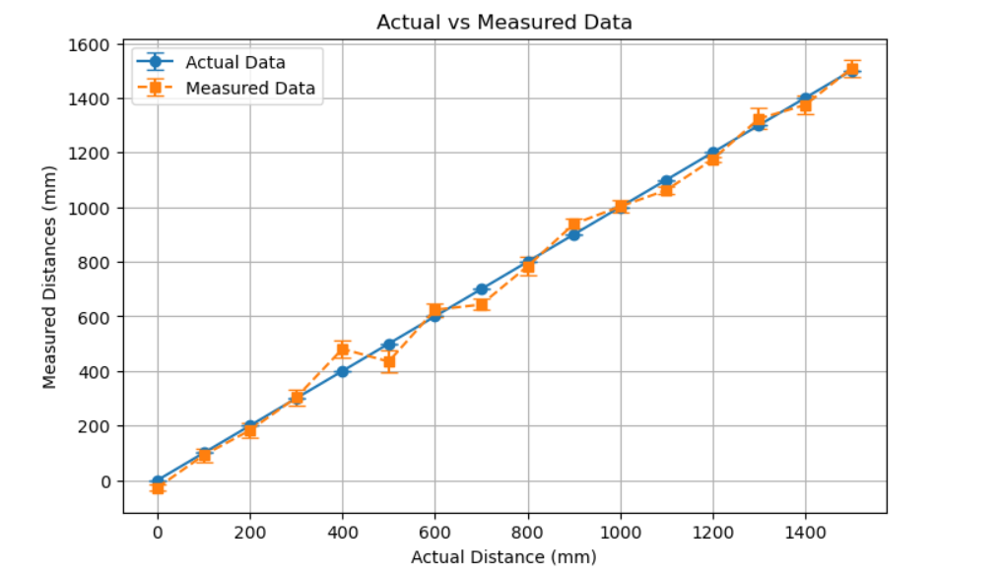
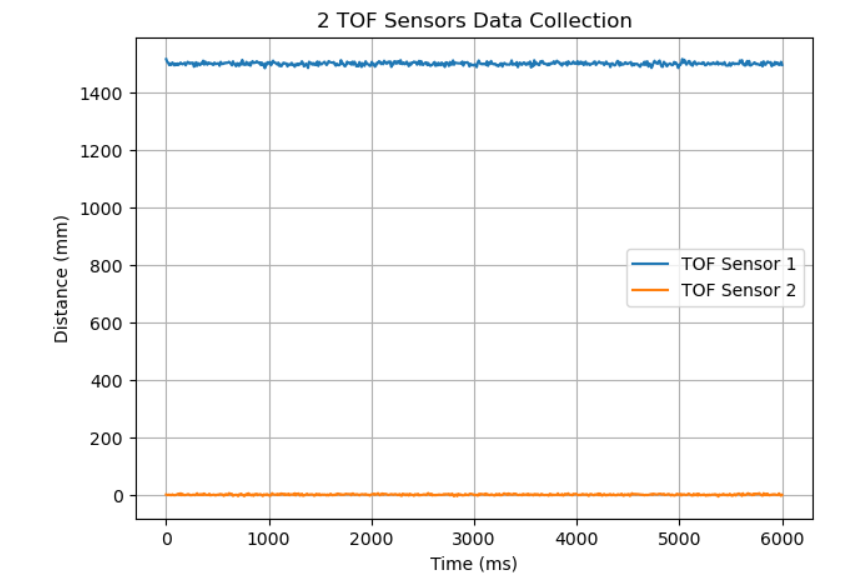
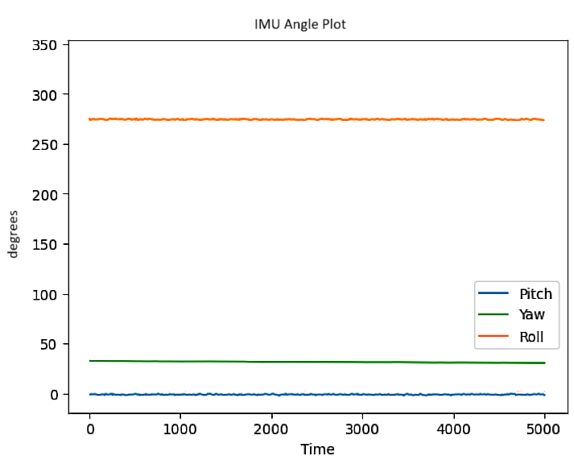

Lab 3: TOF Sensor Integration and Performance Evaluation
Prelab
I began by planning the overall circuit for my sensors. I had two long and two short I2C cables. I figured the TOF sensors would be mounted outside the car, so I used the long I2C cables for them. These cables connect to a SparkFun Qwiic MultiPort, which then links to the Artemis with a short I2C cable. I used th second short I2C cable to connect the IMU to the Qwiic MultiPort. All the sensors were wired together :)
{kind=link}
Both I2C sensors have a default address of 0x52. To handle multiple sensors, I wired the XSHUT pin for one sensor to the Artemis’s A2 pin, allowing me to disable that sensor and change its I2C address. I think I am going to place one TOF sensor at the front of the car and another on the side for better obstacle coverage in later labs.
Lab
Task 1: Power up your Artemis with a battery
To allow the robot to move freely, the Artemis should powered independently; if not, the wire will limit its movement.
- Battery Setup:
I removed the standard connector from a 750 mAh battery and soldered on a JST connector. Then I ensurer each wire is cut separately to avoid shorting the battery. I use heat shrink for insulation as electric tape can come off easier and leaves sticky residue. I actually had to solder black to positive and red to negative since that was what the connector coonnected to.
- Verification:
Afterwards, I powered up the Artemis solely from the battery and confirmed connection vs BLE messages.
{kind=link}
Task 2: Using the Arduino library manager, install the SparkFun VL53L1X 4m laser distance sensor library
I followed the directions opened Sketch → Include Library → Manage Libraries in the Arduino IDE and searched for SparkFun VL53L1X 4m to install it
{kind=link}
Task 3/4: Connect the QWIIC breakout board to the Artemis/Connect the first ToF sensor to the QWIIC breakout board
Here is a photo of my soldering work for the TOF sensor.
{kind=link}
Task 5: Scan the I2C channel to find the sensor
I opened File → Examples → Apollo3 → Wire → Example1_wire_I2C.
The TOF sensor showed up at 0x29, which is the 7-bit representation of 0x52.
{kind=link}
Task 6: The ToF sensor has three modes (Short, Medium, and Long)
These modes optimize performance given the expected range:
.setDistanceModeShort(); // 1.3m
.setDistanceModeMedium(); // 3m (available only with the Polulu VL53L1X Library)
.setDistanceModeLong(); // 4m, Default
I chose Short Mode for close-range obstacle avoidance, though it sacrifices maximum range.
Task 7: Test your chosen mode & Evaluate Performance
- Testing the Mode:
- I use the SparkFun library’s example:
...\SparkFun_VL53L1X_4m_Laser_Distance_Sensor\examples\Example1_ReadDistanceto verify distance readings in short mode.
- Performance Experiments:
I tested distances from 0 in to 150 cm, collecting samples around every 10 cm.
{kind=link}
Task 8: Using notes from the pre-lab, hook up both ToF sensors simultaneously and demonstrate that both work
I modified the code to disable one sensor using the XSHUT pin and changed its I2C address to 0x54. This way I could read from both sensors without dealing with conflicts. I messed up due to a minor typo during this part and it took me a really long time to find it. Here is a code block of how I changed the address of a TOF sensor.
pinMode(XSHUT_PIN, OUTPUT);
digitalWrite(XSHUT_PIN, LOW); // low => off
distanceSensor.setI2CAddress(tof_0_addr); // change addr
digitalWrite(XSHUT_PIN, HIGH); //high => on
{kind=link}
Task 9: In future labs, the code must run quickly (no hanging)
I wrote code to continuously print the Artemis clock to Serial and only print new data from each sensor when it’s availablem utilizing the distanceSensor.checkForDataReady().
In terms of sampling speed findings, it took around 15 ms between loop iterations, 110 ms between sensor measurements, and the sensor’s effective ranging time is ~70 ms, giving a max sampling rate of ~15 Hz.
Task 10: Finally, edit your work from Lab 1
- Time-Stamped Data & Bluetooth:
I added a couple functions to my lab1 framework, but I did not update my notification handler, since I made it vague enought splice the first time around.
- Bluetooth Transmission:
Similar to Lab 2, I implemeted start and stop commands to start/stop data collection and transmit over BLE.
Task 11: Plot of ToF data against Time
{kind=link}
I decided not to do anything fancy with my TOF sensors and just focused on collected data at the same time. I placed them away from one another facing a wall.
Task 12: Plot of IMU data against Time
{kind=link}
I decided not to do anything fancy with my IMU and just focused on collected data at the same time.
Reflection
I learned a lot about soldering this lab mainly because I soldered for the first time in 4 years. I feel like I lack confidence, but I definitely have a lot more thanks to this lab. I messed up at least 3 times and had to redo it. I worry that some of my wires may be short now :(we will see how that impacts me as the labs progress.
Sometimes the wires I soldered on to the TOF sensors got in the way and I had to redo data. I initially did not change the address of the one of the TOF sensors properly and it caused me some issues when debugging.
Acknowledgments
I would to thank Aidan McNay for lending me his person wire stripper for a day and letting me keep it for 5. I would also like to thank Anunth Ramaswami for the emotional support while soldering and advising me when I accidentally got the one of the wires stuck to the structure that was holding it up. Thank you to the course staff for supporting me in open hours as well:)